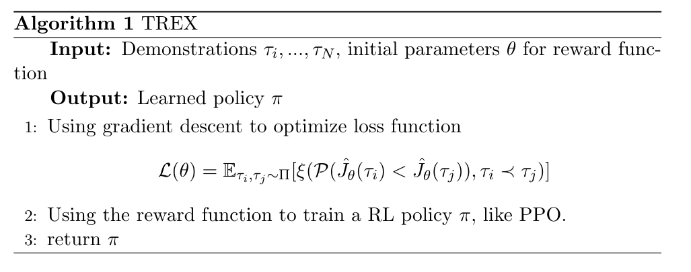
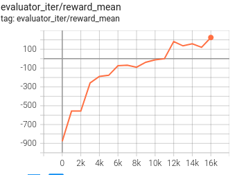
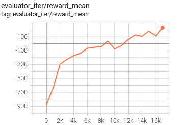

TREX¶
Overview¶
TREX (Trajectory-ranked Reward Extrapolation) was first proposed in Extrapolating Beyond Suboptimal Demonstrations via Inverse Reinforcement Learning from Observations, which uses ranked demonstrations to inference reward function. Different from previous methods, TREX seeks a reward function that explains the ranking over demonstrations, rather than justifying the demonstrations. This approach is proved practically to have the potential of learning good policy from highly suboptimal demostrations. In addition, the predicted reward only depends on observations, without actions.
Quick Facts¶
TREX is an Inverse Reinforcement Learning (IRL) algorithm and can be combined with any RL algorithm.
Demonstrations used in TREX require ranking information.
The reward function optimization can be viewed as a simple binary classification problem.
TREX is able to infer a meaningful reward function even when noisy, time-based rankings are provided.
Pseudo-code¶
{kind=link}
In the pseudo code, theta denotes the parameters of reward function and ti means a trajectory sampled in demonstrations. The functon L is the loss for training reward function, which is explained below.
Key Equations or Key Graphs¶
The loss for reward function:
where ti, tj is trajectories in demonstrations. In fact, this loss function is only a binary classification loss function. Its goal is to figure out the better one of two trajectories. The function P is defined as follow:
The final loss function is in cross entropy form:
Extensions¶
TREX can work with noisy ranked demonstrations and is relatively robust to noise of up to around 15% pairwise errors.
TREX can work with time-based rankings. We can just use data generated from training a certain RL agent. The rankings can be estimated by the time when the trajectory is generated.
Implementations¶
TREX can be combined with the following methods:
Given demonstrations generated from RL algorithms or human knowledge (only observations and rankings are needed), TREX will infer the reward function of the environment. Then the reward function can be applied to RL algorithms like PPO or SAC to estimate rewards while training.
In practical, demonstrations are generated by pretrained policies in our implementation. First, we need to train a RL agent and save the checkpoints every 10000 iterations. Then, we use the different agents to generate demonstrations and rank them according to the final rewards. According to the paper, we also implement several data augmentation techniques. In the default setting, we sample a part of the trajectories randomly and generate new demonstrations, whose number is equal to the origin ones. The final dataset for training reward function contains both origin demonstrations and generated demonstrations. Note that later states in a trajectory is usually better than the beginning ones, so we ensure that :
The input of the reward model is observations and its output is the predicted reward value. The default reward model is defined as follows:
- class ding.reward_model.TrexRewardModel(config: easydict.EasyDict, device: str, tb_logger: SummaryWriter)[source]
- Overview:
The Trex reward model class (https://arxiv.org/pdf/1904.06387.pdf)
- Interface:
estimate,train,load_expert_data,collect_data,clear_date,__init__,_train,
实验 Benchmark¶
environment |
best mean reward |
PPO |
TREX+PPO |
config link |
|---|---|---|---|---|
Lunarlander |
2M env_step, reward 200 |
 |  |
We use the agents every 1000 iterations(1000-9000) in PPO training process to generate demonstrations. Although the reward of the best demonstration used is about -50 (suboptimal), the agent trained by trex can reach a much better score (200).
Reference¶
Daniel S. Brown, Wonjoon Goo, Prabhat Nagarajan, Scott Niekum: “Extrapolating Beyond Suboptimal Demonstrations via Inverse Reinforcement Learning from Observations”, 2019; arXiv:1904.06387. https://arxiv.org/abs/1904.06387